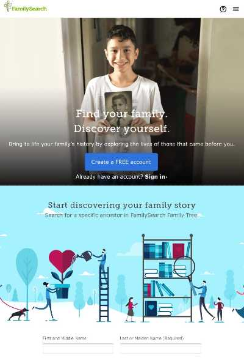
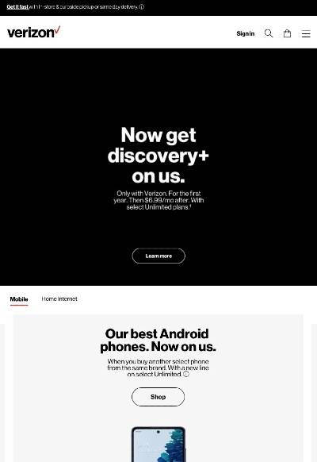
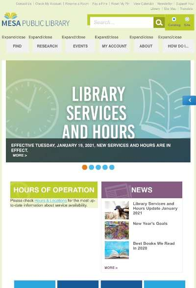

PARC: Repetition
The Church of Jesus Christ of Latter-Day Saints
https://www.familysearch.org/
On familysearch.org I counted seven big, bold buttons that invite the user to sign-up or start searching. All of them are very similar in color and shape. This repitition creates a feeling of cohesiveness for the user.
White Space and Clean Design
Verizon
https://www.verizon.com/
On Verizon.com I noticed that there is empty space. It gives a nice feeling of clean and uncluttered to the website. I bet more people make purchases because the website feels simple and not overwhelming.
Hick's Law
The City of Mesa - Public Library
https://www.mesalibrary.org/
On Mesalibrary.org I was impressed how small the main page is, considering that it's a website for a library! I think they did a great job making a HUGE amount of material accessible without making the page overwhelming, with too many buttons and options.